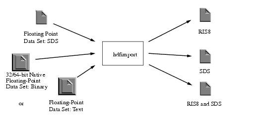
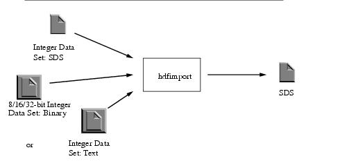
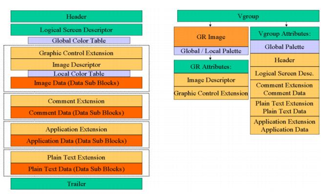

HDF User’s Guide
Version 4.2r4[Top] [Prev]
|
|
HDF User’s GuideVersion 4.2r4 |
[Top] [Prev] |
Chapter 15 -- HDF Command-line Utilities
15.1 Chapter Overview
This chapter describes a number of command-line utilities that are available for working with HDF files.
The HDF command-line utilities are application programs that are executed from the UNIX shell prompt. These utilities serve the following needs of the HDF developer.
- They make it possible to perform, at the command line level, common operations on HDF files without having to resort to custom-programmed utilities to do these operations.
- They provide the capability for performing operations on HDF files that would be very difficult to do with custom-programmed utilities.
Table 15A lists the names and descriptions of the utilities described in this chapter.
TABLE 15A The HDF Command-line Utilities
display tools
[This utility replaces fp2hdf.]
maintenance operations
file conversion
conversion15.2 Displaying the Contents of an HDF File: hdp (or HDF Dumper)
15.2.1 General Description
The hdp utility, also known as the HDF dumper, provides quick and general information about all objects in the specified HDF file. It can list the contents of HDF files at various levels with different details. It can also dump the data of one or more specific objects in the file.
15.2.2 Command-line Syntax
The hdp option flags are described in Table 15B.
TABLE 15B
Like hdfed, hdp provides a set of commands that allow the user to determine what kind of information is to be displayed.
TABLE 15C The hdp Command SetThe list command
Syntax: list [-acensldg] [-o<f|g|t|n>] [-t tag ] filelistFlags:-a Print annotations of selected items. (Sets long output.)-c Print classes of selected items. (Sets long output.)-n Print names or labels of selected items. (Sets long output.)-e Print special element information for selected items. (Sets long output.)-s Set output to short format.-l Set output to long format.-d Set output to debuffing format.-g Display information for groups only.-t number Display information for objects with the given tag number.-t name Display information for objects with the given name.-of Print items in the order found in the file.-og Print items in group order.-ot Print items in tag order. (default)filelist Names of HDF input files, separated by spaces.Description: Displays the contents of the HDF files in the specified format. As with the hdfed info command, the listing for special elements will contain a special tag value (forDFTAG_VS, it is 18347) and the text Unknown Tag.The dumpsds command
Syntax: hdp dumpsds [-a | -i indices | -r refs | -n names ] [-v | -h | -d][-o filename ] [-bx] filelistFlags: -a Dump all SDSs in the file(s). (default)-i indices Dump the SDSs at the positions listed in indices.-r refs Dump the SDSs with reference numbers listed in refs.-n names Dump the SDSs with names listed in names.-v Dump all SDS contents, including annotations. (default)-h Dump SDS header information only, no data or element annotations.-d Dump SDS data only, no tag/ref or header information. Output is formatted for input to fp2hdf.-c Print space characters as they are, not \<digit>.-g Do not print data of file (global) attributes.-l Do not print data of local attributes.-s Do not add carriage return to a long line, i.e. dump it as a stream.-o filename Print output to the file filename.-b Output in binary format.-x Output in ASCII format. (default)filelist Names of HDF input files, separated by spaces.Description: Displays SDS information in the specified format. The -r, -i, and -n flags can be selected together.The dumpgr commad
Syntax: hdp dumpgr [-a | -i indices | -r refs | -n names ][-v | -h | -d | -p] [-o filename ] [-bx] filelistFlags: -a Dump all raster images (RIs) in the file(s). (default)-i indices Dump the RIs indicated in indices.-r refs Dump the RIs with reference numbers listed in refs.-n names Dump the RIs with names listed in names.-v Dump all RI contents, including all annotations. (default)-h Dump RI header information only, no data or element annotations.-d Dump RI data only, no tag/ref or header information. Output is formatted for input to fp2hdf.-p Dump palette information for the requested images or for all images if no specific image is requested. With -h, dump only palette header information and no data; with -d, dump palette data and no header information; with -v or without any of -h, -d, or -v, dump palette data and header information.-c Print space characters as they are, not \<digit>.-g Do not print data of file (global) attributes.-l Do not print data of local attributes.-s Do not add carriage return to a long line, i.e. dump it as a stream.-o filename Print output to file filename.-b Output in binary format.-x Output in ASCII format. (default)filelist Names of HDF input files, separated by spaces.Description: Displays GR raster image information in the specified format. The -r, -i, and -n flags can be selected together. GR images are always stored in pixel interlace mode (see Section 8.5.1 on page 278).The dumpvd command
Syntax: hdp dumpvd [-a | -i indices | -r refs | -n names | -c classes |-f f1, f2, ...] [-v | -h | -d] [-o filename ] [-bx]filelistFlags: -a Dump all vdatas in the file(s). (default)-i indices Dump the vdatas at positions listed in indices.-r refs Dump the vdatas with the reference numbers listed in refs.-n names Dump all the vdatas with names listed in names.-c classes Dump all the vdatas with the classes listed listed in classes.-f f1, f2, ...Dump data based on the indicated fields in the vdata header.-v Dump everything, including annotations. (default)-h Dump vdata header information only, no data or element annotations.-d Dump vdata data only, no tag/ref or header information. Output is formatted for input to fp2hdf.-o filename Print output to file filename.-b Output in binary format.-x Output in ASCII format. (default)filelist Names of HDF input files, separated by spaces.Description: Displays vdata information in the specified format. The -r, -i, -n, and -c flags can be selected together.The dumpvg command
Syntax: dumpvg [-a | -i indices | -r refs | -n names | -c classes ][-v | -h ] [-o filename ] filelistFlags: -a Dump all vgroups in the file(s). (default)-i indices Dump the vgroups at positions listed in indices.-r refs Dump the vgroups with the reference numbers listed in refs.-n names Dump all the vgroups with names listed in names.-c classes Dump all the vgroups with classes listed in classes.-v Dump everything, including annotations. (default)-h Dump vgroup header information only, no data or element annotations.-o filename Print output to file filename.filelist Names of HDF input files, separated by spaces.Description: Displays vgroup information in the specified format. The -r, -i, -n, and -c flags can be selected together. This command has no binary output option; it produces only ASCII text output.The dumprig command
Syntax: dumprig [-a | -i indices | -m n | -r refs ] [-dhv][-o filename [-b | -x]] filelistFlags: -a Dump all RIGs in the specified file(s). (default)-i indices Dump theRIGs with the positions listed in indices.-m n Dump only RIGs with the specified data length. n can have a value of 8 or 24, for 8- or 24-bit raster images, respectively.-r refs Dump the RIGs with the reference numbers listed in refs.-d Dump RIG data only, no tag/ref or header information. Output is formatted for input to fp2hdf.-h Dump RIG header information only, no data or element annotations.-v Dump everything, including annotations. (default)-c Do not add carriage return to a long line, i.e. dump it as a stream.-o filename Print output to file filename.-b Output in binary format.-x Output in ASCII format. (default)filelist Names of HDF input files, separated by spaces.Description: Displays RIG information in the specified format. The -r, -i, and -m flags can be selected together.15.3 Comparing two HDF Files: hdiff
15.3.1 General Description
The hdiff utility compares two HDF files and reports differences between them. Only datasets, attributes, and vdata objects are compared.
This section presents the basic usage of the program and examples.
15.3.2 Command-line Syntax
The hdiff command line syntax is as follows:
The hdiff command line options and usage are described in Table 15D:
TABLE 15Dhdiff Option Flags15.3.3 Examples
Examples of hdiff usage can be found at http://www.hdfgroup.org/doc_resource/h4_doc/util/hdiff/hdiff_examples.html
15.4 Displaying Vdata Information: vshow
15.4.1 General Description
Displays information about either one vdata object in an HDF file, or all Vdata objects in the file.
15.4.2 Command-line Syntax
The vshow option flags are described in Table 15E.
TABLE 15Evshow Option Flags15.4.3 Examples
Information about all of the Vdata objects in the HDF file named image012.hdf must be examined. The following command will display this information.
vshow image012.hdf +15.5 Converting Floating-point or Integer Data to SDS or RIS8: hdfimport
Note that hdfimport replaces the fp2hdf utility that was distributed with earlier HDF releases.
15.5.1 General Description
The hdfimport utility converts data from ASCII text files, 32-bit or 64-bit native floating point data files, 8-bit, 16-bit or 32-bit integer files, or HDF floating-point scientific data sets to either HDF floating-point scientific data sets or 8-bit HDF raster image datasets, or both, and stores the results in an HDF file. (See Figure 15a.) The images can be scaled on a user-specified mean value.
FIGURE 15a The hdfimport Utility15.5.2 Command-line Syntax
The syntax of hdfimport is as follows.
The input-file parameter specifies the name of the file containing the unconverted data set. The file may contain a single two-dimensional or three-dimensional array in ASCII text, native floating point, native integer, or HDF SDS format. If an HDF file is used for input, it must contain an SDS. The SDS need only contain a dimension record and the data, but if it also contains maximum and minimum values and/or scales for each axis, these will be used. If the format is ASCII text, native floating point, or native integer, see Table 15G and the accompanying discussion regarding the required structure of the data.
Data from one or more input files will be stored as datasets and/or images in a single output file, the HDF file specified in the parameter output-file. The output file will contain one SDS and/or one image for each input file.
The hdfimport options and parameters are described in Table 15F.
TABLE 15Fhdfimport Options and ParametersThe -e and the -i flags cannot be used simultaneously. Either pixel interpolation or bilinear interpolation can be chosen for image expansion, but not both.
Data from several input files (with one data set per input file) are stored as several data sets and/or images in one output HDF file. Alternatively, a shell script can be used to call hdfimport repeatedly to convert data from multiple input files to corresponding output HDF files.
15.5.3 Structure of Data in non-HDF Input Files
If the format ofinput-file is ASCII text, native floating point, or native integer (i.e., input-file is not an HDF file), the data must be structured in fields as described below.
TABLE 15Ghdfimport ASCII Text, Native Floating Point, or Native Integer Input Fieldsformat, number_of_columns, number_of_rows, and number_of_planes are native integers. format is the integer representation of the appropriate 4-character string (0x46503332 for FP32, 0x46503634 for FP64).
If the data input format is FP32 or FP64, the remaining input fields are composed of native 32-bit floating point values for FP32 input format, or native 64-bit floating point values for FP64 input format data.
If the data input format is
IN08,IN16, orIN32, the remaining input fields are composed of native 8-bit integer values for IN08 input format, native 16-bit integer values for IN16 input format, or native 32-bit integer values for IN32 input format data.The term scale refers to the spacing between points on the axes. If the spacing is uniform, i.e., the gaps are of equal size, a uniform scale is specified -- for example, 1.0, 2.0, 3.0, ...... Scales may be omitted in an HDF file; they must be included in a text file.
The arrays containing the plane, row, and column scales must have a size equal to the values specified in the number_of_rows , number_of_columns, and number_of_planes positions, respectively.
15.6 Converting 8-Bit Raster Images to the HDF Format: r8tohdf
15.6.1 General Description
The r8tohdf utility converts a set of raw raster images to the HDF RIS8 format and writes them to a file.
15.6.2 Command-line Syntax
The option flags are described in Table 15H.
TABLE 15Hr8tohdf Option Flags15.6.3 Examples
A file named rawras contains a 256 x 512-byte raw raster image, and its palette is stored in a file name mypal. To convert the information in these files to an RIS8 without compression and store the RIS8 in a file named ras.hdf, enter the following r8tohdf command:
r8tohdf 256 512 ras.hdf -p mypal rawrasA 800 x 1000-byte raw raster image is stored in a file named bigpic. This data must be converted to a RIS8 without a palette, compressing it using run-length encoding, then stored in a file named bigpic.hdf. The following command will do this:
r8tohdf 800 1000 bigpic.hdf -c bigpicA 300 x 400 raw raster image is contained in each of the files named pic1, pic2, and pic3. To convert all three files to RIS8s, compress them using the IMCOMP method, and store them in a file named pic.hdf, enter
r8tohdf 300 400 pic.hdf -i pic1 pic2 pic3Different types of raster image data are to be stored in a file named ras.hdf. The image data in the file rawras1 will be stored without a palette. The image data sets from the file named rawras2 are to be stored with a palette extracted from a file named mypal. The images from the rawras1 and rawras2 files are to be compressed using run-length encoding, and the image in the rawras3 file is not to be compressed. The size of all images are 256 x 512 bytes. The following command is used to do this:
r8tohdf 256 512 ras.hdf -c rawras1 -p mypal rawras2 -r rawras315.7 Converting 24-Bit Raw Raster Images to RIS8 Images: r24hdf8
15.7.1 General Description
The r24hdf8 utility quantizes a raw RGB 24-bit raster image, creating an 8-bit image with a 256-color palette, then it stores the palette and raster image data in an HDF file.
15.7.2 Command-line Syntax
The pixel order in the raw 24-bit image file is left-to-right and top-to-bottom. Each pixel data element consists of three contiguous bytes, the first representing the red intensity value, the second the green intensity value, and the third the blue intensity value. Use the ptox filter to convert the raster image data from a pixel-interlaced format to scan-plane interlaced.
15.7.3 Examples
A file named rawraster containing 24-bit raw raster images with x and y-dimensions of 480 x 640, respectively, must be converted to the HDF RIS8 format and stored in a file named hdfraster. The following command is used to do this:
r24hdf8 480 640 rawraster hdfraster15.8 Converting Raw Palette Data to the HDF Palette Format: paltohdf
15.8.1 General Description
The paltohdf utility converts raw palette data to the HDF palette format. The raw palette data must have 768 bytes organized in the following order: first, 256 contiguous red intensity values, then 256 contiguous green intensity values, then 256 contiguous blue intensity values. The palette in the HDF file will have the RGB values pixel-interlaced, as follows.
This is the standard HDF format for 8-bit palettes.
15.8.2 Command-line Syntax
If an HDF palette format file is specified that does not exist, it is created before the converted data is stored. If an HDF palette format file is specified that already exists, the converted data is appended to the file.
15.9 Extracting 8-Bit Raster Images and Palettes from HDF Files: hdftor8
15.9.1 General Description
The hdftor8 utility extracts the raster images and/or palettes from an HDF file and stores them in one file that contains the raster image data and another that contains the palette data.
15.9.2 Command-line Syntax
The option flags are described in Table 15I.
TABLE 15I hdftor8 Option Flags:The names given as the HDF format file, raster image file, and palette file are interpreted by hdftor8 as follows: For each raster image file, the file name is given the extension
where # represents the raster image number from the HDF file, @ represents the x-dimension of the raster image and % represents the y-dimension of the raster image. For each palette file, the file name is given the extensions .#, where # represents the palette number from the HDF format file.
If no name is given for the raster image file, the default name img.#.@.% is assigned, where #, @, and % are defined as in the preceding paragraph. The default name for a palette file, if no name is specifically given in the command, is pal.#.
15.9.3 Examples
A file named denm.hdf contains three 512 x 256 raster images and three palettes. To store these images and palettes in separate raster image and palette files, use the following hdftor8 command:
Six files are created, named img1.512.256, img2.512.256, img3.512.256, pal.1, pal.2, and pal.3.
15.10 Extracting Palette Data from an HDF File: hdftopal
15.10.1 General Description
The hdftopal utility converts a palette in an HDF file to a raw palette in an non-HDF file. The raw palette will have 768 bytes with the first 256 bytes representing red intensity values, the second 256 bytes representing green intensity values, and the third 256 bytes representing blue intensity values. The utility performs the converse operation of the paltohdf utility.
15.10.2 Command-line Syntax
15.11 Converting Several RIS8 Images to One 3D SDS: ristosds
15.11.1 General Description
The ristosds utility creates a single HDF file consisting of a three-dimensional SDS from a set of HDF files containing one or more raster images. All images in the input HDF files must have the same dimensions. If a palette is to be included with the images, it should be in the first HDF input file. Only one palette can be associated with the images; any additional palette data encountered by the utility after the first palette has been processed will be ignored.
15.11.2 Command-line Syntax
15.11.3 Examples
The contents of a directory consists of 20 files named storm001.hdf, storm002.hdf, ... storm020.hdf. Each file contains a single RIS8 with a 100 x 200 raster image. A file that combines these 20 raster images into a 32-bit floating-point SDS with the dimensions 100 x 200 x 20 can be created with the following ristosds command:
ristosds storm*.hdf -o storm.hdf15.12 Converting an HDF RIS24 Image to an HDF RIS8 Image: hdf24hdf8
15.12.1 General Description
The hdf24hdf8 utility quantizes an HDF RGB RIS24 pixel-interlaced image, producing an HDF RIS8 image with a 256-color palette and stores the palette and raster image data in an HDF file.
15.12.2 Command-line Syntax
15.13 Compressing RIS8 Images in an HDF File: hdfcomp
15.13.1 General Description
The hdfcomp utility reads RIS8 images from a set of HDF files, compresses them and stores the compressed data in a second HDF file. If the output HDF file exists, the compressed images will be appended to it.
15.13.2 Command-line Syntax
The option flags are described in Table 15J
TABLE 15Jhdfcomp Option Flags15.13.3 Examples
A directory contains twenty files named storm001, storm002, ... storm020. Each of these files contains a single RIS8 image. To compress these images using run-length encoding and store them in a file named altcomp.hdf, use the following hdfcomp command:
hdfcomp allcomp.hdf -c storm*.hdf15.14 Compressing an HDF File: hdfpack
15.14.1 General Description
The hdfpack utility compresses all of the data in an HDF file and writes the compressed data to a second HDF file.
15.14.2 Command-line Syntax
The hdfpack option flags are described in Table 15K.
TABLE 15Khdfpack Option Flags15.14.3 Examples
To compress the data in the file named aa.hdf and store the compressed data in the file named aa.cmp, use the following hdfpack command:
Suppose a file named bb.hdf contains data elements stored as sequences of linked blocks. The following hdfpack command compresses the file while leaving the linked-block elements intact, and writes the compressed data to a file named bb.blk.
15.15 Reformatting an HDF File: hrepack
15.15.1 General Description
hrepack is a command line utility that performs a logical copy of an input HDF4 file to an output HDF4 file, copying all the high level objects while optionally rewriting the objects with or without compression and/or with or without chunking. (Note that compression is supported only for data sets and images in HDF4.)þ
Further information is available at the following URL:
http://www.hdfgroup.org/doc_resource/h4_doc/util/hrepack/hrepack.html
15.15.2 Command-line Syntax
The hrepack syntax is as follows:
The hrepack options and usage are as follows:
15.16 Creating Vgroups and Vdatas: vmake
15.16.1 General Description
The vmake utility creates Vgroup and Vdata objects in the specified HDF file.
15.16.2 Command-line Syntax
To create a new Vgroup:
To create a new Vdata object:
The Vdata_field_data_type argument consists of a Vdata field name followed by an equal sign and one of the following characters:
Any of these characters may be preceded by a decimal number specifying an element size other than one.
To create links from one or more Vdatas to a specified Vgroup:
Vgroup_ref_number is the reference number of the Vgroup to which the Vdatas are to be linked. Vdata1_ref_number through Vdatan_ref_number are the reference numbers of the Vdatas being linked to the Vgroup.
Note that all vmake arguments, except the output HDF filename, are surrounded by double quotes.
15.16.3 Examples
Assume the following. A file containing storm data is named
storm.dat. A Vdata object namedStorm Data Bmust be created in an HDF file namedsdata.hdfusing vmake. The new Vdata object is to contain a field namedPLISTwith an element size of three long integers. And finally, the data instorm.datis to be loaded into the Vdata objectStorm Data B.This can be accomplished with the following command:
15.17 Listing Basic Information about Data Objects in an HDF File: hdfls
15.17.1 General Description
The hdfls utility provides general information about the tags, reference numbers, and if requested, lengths of the data elements.
The hdfls utility provides general information about the HDF data objects in a file. This information includes the tags and reference numbers of the data objects, the lengths and offsets of the HDF object's data elements, the contents of DD blocks, and information regarding special elements. In situations where the DD block information is not needed, we recommend the hdp utility with the list command and its options.
15.17.2 Command-line Syntax
When no flags are used, hdfls displays data objects ordered by the tags and reference numbers. Contents of the DD blocks and lengths and offsets of the data elements are not displayed.
The option flags are described in Table 15L.
TABLE 15Lhdfls Option Flags15.17.3 Examples
The file SDSchunked.hdf, created by the example..... in Chapter 3, contains one chunked data set.
hdfls -s can be used to display information about the data objects and special elements in this file. Note that data objects are listed in tag and reference number ascending order.
For example, the command
would display the following output:
SDSchunked.hdf: File library version: Major= 4, Minor=1, Release=2 String=NCSA HDF post Version 4.1 Release 2, March 1998 Linked Blocks Indicator : (tag 20) Ref no 1 12 bytes Ref no 2 34 bytes Ref no 3 4096 bytes Version Descriptor : (tag 30) Ref no 1 92 bytes Data Chunk : (tag 61) Ref no 1 12 bytes Ref no 2 12 bytes Ref no 3 12 bytes Ref no 4 12 bytes Ref no 5 12 bytes Ref no 6 12 bytes Number type : (tag 106) Ref no 12 4 bytes SciData dimension record : (tag 701) Ref no 12 22 bytes Numeric Data Group : (tag 720) Ref no 2 16 bytes Vdata : (tag 1962) Ref no 4 116 bytes Ref no 7 60 bytes Ref no 9 60 bytes Ref no 11 60 bytes Vdata Storage : (tag 1963) Ref no 7 4 bytes Ref no 9 4 bytes Ref no 11 2 bytes Vgroup : (tag 1965) Ref no 8 33 bytes Ref no 10 33 bytes Ref no 13 60 bytes Ref no 14 47 bytes Special Scientific Data : (tag 17086) Ref no 3 72 bytes Chunked Element: logical size: 12 number of dimensions: 2 array of chunk lengths for each dimension: 3 2 Special Vdata Storage : (tag 18347) Ref no 4 72 bytes Linked Block: first 12 standard 4096 per unit 1615.18 Editing the Contents of an HDF File: hdfed
15.18.1 General Description
The hdfed utility allows experienced HDF users to manipulate the elements of an HDF file. These manipulations include
It is designed primarily for users who need to know about HDF files at the level of individual data elements. It is not designed to provide a comprehensive high-level view of the contents of an HDF file -- other tools and utilities should be used for that purpose. To use hdfed one should be familiar with the components of an HDF file covered in the HDF Specifications manual.
The hdfed utility is loosely modeled on ed, the UNIX line editor. When hdfed is invoked, it prompts the user for commands, as does ed. Also, basic command syntax and description information is available to the user through hdfed. The most common hdfed commands are used to control the position in the HDF file and the format of the information provided.
The initial view of the file under hdfed consists of a set of tag/reference number pairs. Although hdfed allows modification of tags and reference numbers within strict constraints, it will not allow the user to arbitrarily modify binary data in the file.
The following terms and concepts must be understood in order to use hdfed correctly and will be used in the following discussion about hdfed.
- The data object or object refers to an HDF data object and the data descriptor of that object. (i.e., tags, reference numbers, offsets, or lengths.)
- The data or data element refers to the record that the data descriptor points to. For a precise definition of the data that is associated with a given tag consult the HDF Specifications and Developer's Guide v3.2 from the HDF web site at http://www.hdfgroup.org/.
- The group refers to a predefined collection of data objects that correspond to a particular application. For example, a raster image group refers to the collection of objects that are used to store all of the information in a raster image set.
Once an HDF file has been opened by hdfed, the following operations can be performed on the data file, among others:
- Select an HDF object to examine more closely.
- Move forward or backward within the HDF file.
- Get information about an object. (tag, reference number, size, label)
- Display a raster image using the ICR protocol.
- Display the contents of any object.
- Delete an object.
- Annotate an object with a label or description.
- Write an object to a second HDF file.
- Write data elements in binary form to a non-HDF file.
- Close the file and exit, or open a new file.
15.18.2 Command-line Syntax
The syntax of hdfed is
If a file named filename exists, it is opened and a backup is made of the file. Files may also be opened from within the editor.
The option flags are described in Table 15M.
TABLE 15Mhdfed Option FlagsThe -batch flag is useful when a group of commonly-used commands are included in a UNIX shell script. The following is an example of such a script, using the C-shell, that lists information about the groups in a specified HDF file.
#!/bin/csh -f set file=$1 shift hdfed -batch $file -nobackup << EOF info -all group $* close quit EOF echo ""To receive usage information, as well as a quick list of the hdfed commands, type the command
hdfed -helpWhile in hdfed, the standard command prompt is displayed.
hdfed>Many hdfed commands have qualifiers, or flags. For example, the command info may be followed by the -all, -long, -group, or -label flags.
All of the commands and flags can be abbreviated to the extent that their abbreviations are unique. For example, -he is ambiguous as it could stand for either the -hexadecimal or the -help flags, but -hel is not ambiguous.
TABLE 15N The hdfed Command SetTo obtain information about the usage of any hdfed command, type the following at the hdfed prompt.
Note that usage information cannot be obtained by typing only the command, with no flags. There are other hdfed commands, such as delete, that do not require an argument, so watch out for this kind of error.
There is a subset of hdfed commands where predicates, items, and comparators are used. Items are used to denote an HDF object type and can be any of the following identifiers; tag, ref, image_size, or label. A comparator is an expression used to compare an item with a user-defined value, and can be any of the following:
User-defined values can be either a number (with or without a decimal point) or a string of characters delimited by double-quotes. Predicates consist of items, comparators and user-defined values and are of the syntax:
Or they may consist of the identifier group, as in the next group command. Some examples of predicates are:
next group next (same as "next group" as "group" is the default identifier) next tag = 720 next ref = 2 next image_size < 1000 next label = "abc"The following is a more inclusive description of the hdfed commands.
The help command
Flags: NoneDescription: Prints a help screen describing the basic purpose and functionality of the hdfed utility.Usage Example:hdfed> help hdfed allows sophisticated HDF users the ability to manipulate the elements in an HDF file. These manipulations include selecting groups ...The open command
Flags: -nobackup The specified file name is not backed up.Description: Opens the specified HDF file.Usage Example:hdfed> open -help open <file> [-nobackup] -nobackup Don't make a backup for this file. hdfed> hdfed> open h1 hdfed>The info command
Flags: -all Displays information for all of the objects in the current file.-long Displays the long form of the information.-group Organizes the information into groups.-label Shows any labels.Description: Displays information for a data object. The listing for special elements will contain a special tag value (in Item 13 below it's 18347, which corresponds toDFTAG_VS) and the text "Unknown Tag".Usage Example:hdfed> info -all -label -long (1) Version Descriptor : (Tag 30) Ref: 1, Offset: 202, Length :92 (bytes) (2) Scientific Data : (Tag 702) Ref: 2, Offset: 294, Length : 200 (bytes) (3) Number type : (Tag 106) Ref: 2, Offset: 494, Length : 4 (bytes) (4) SciData description : (Tag 701) Ref: 2, Offset: 498, Length : 2 (bytes) (5) SciData max/min : (Tag 707) Ref: 2, Offset: 520, Length : 4 (bytes) *(6) Numeric Data Group : (Tag 720) Ref: 2, Offset: 524, Length : 12 (bytes) Label: Experiment #1 (7) Data Id Label : (Tag 104) Ref: 3, Offset: 536, Length : 17 (bytes) (8) Scientific Data : (Tag 702) Ref: 4, Offset: 553, Length : 400 (bytes) (9) Number type : (Tag 106) Ref: 4, Offset: 953, Length : 4 (bytes) (10) SciData description : (Tag 701) Ref: 4, Offset:957, Length : 22 (bytes) (11) Numeric Data Group : (Tag 720) Ref: 4, Offset: 979, Length : 8 (bytes) Label: Experiment #2 (12) Data Id Label : (Tag 104) Ref: 5, Offset: 987, Length : 17 (bytes) (13) Unknown Tag : (Tag 18347) Ref: 8, Offset: 0, Length : 40(bytes hdfed> hdfed> info -group -all **Group 1: Numeric Data Group : (Tag 720) Ref 2 Scientific Data : (Tag 702) Ref 2 SciData description : (Tag 701) Ref 2 SciData max/min : (Tag 707) Ref 2 **Group 2: Numeric Data Group : (Tag 720) Ref 4 Scientific Data : (Tag 702) Ref 4 SciData description : (Tag 701) Ref 4 **These do not belong to any group: Version Descriptor : (Tag 30) Ref 1 Number Type : (Tag 106) Ref 2 Data Id Label : (Tag 104) Ref 3 Number Type : (Tag 106) Ref 4 Data Id Label : (Tag 104) Ref 5 hdfed>The prev command
Flags: None.Description: Moves to the next object that satisfies the predicate list.Usage Example:hdfed> info -all (1) Version Descriptor : (Tag 30) Ref 1 (2) Scientific Data : (Tag 702) Ref 2 (3) Number type : (Tag 106) Ref 2 (4) SciData description : (Tag 701) Ref 2 (5) SciData max/min : (Tag 707) Ref 2 *(6) Numeric Data Group : (Tag 720) Ref 2 (7) Data Id Label : (Tag 104) Ref 3 (8) Scientific Data : (Tag 702) Ref 4 (9) Number type : (Tag 106) Ref 4 (10) SciData description : (Tag 701) Ref 4 (11) Numeric Data Group : (Tag 720) Ref 4 (12) Data Id Label : (Tag 104) Ref 5 hdfed> hdfed> ! The '*' in the first column marks the current hdfed> ! position. hdfed> ! The 'next' and 'prev' commands work with predicates. hdfed> ! If I want to move to the max/min element, hdfed> ! I can use the 'tag=' predicate. hdfed> hdfed> prev tag=707 hdfed> info (5) SciData max/min (SciData) : (Tag 707) Ref:2 hdfed>The next command
Flags: None.Description: Moves to the next object that satisfies the predicate.Usage Example:hdfed> ! Move in the file using next and prev hdfed> ! The move direction depends on the relative positions. hdfed> ! so it is often necessary to do an 'info -all' first. hdfed> info -all (1) Version Descriptor : (Tag 30) Ref 1 (2) Scientific Data : (Tag 702) Ref 2 (3) Number type : (Tag 106) Ref 2 (4) SciData description : (Tag 701) Ref 2 *(5) SciData max/min : (Tag 707) Ref 2 (6) Numeric Data Group : (Tag 720) Ref 2 (7) Data Id Label : (Tag 104) Ref 3 (8) Scientific Data : (Tag 702) Ref 4 (9) Number type : (Tag 106) Ref 4 (10) SciData description : (Tag 701) Ref 4 (11) Numeric Data Group : (Tag 720) Ref 4 (12) Data Id Label : (Tag 104) Ref 5 hdfed> hdfed> ! This predicate persists for the next and prev hdfed> ! commands. That means if I now type another 'next' hdfed> ! command, it will look for a tag that equals 707. hdfed> hdfed> next Reached end of file. Not moved. hdfed> info (5) SciData max.min (SciData) : (Tag 707) Ref: 2 hdfed> hdfed> next group hdfed> next group hdfed> info (11) Numeric Data Group : (Tag 720) Ref 4 hdfed>The dump command
Flags: -offset Starting offset-length Length of the object to dump.-decimal Decimal format (32-bit integers)-short Decimal format (16-bit integers)-byte Decimal format (8-bit integers)-octal Octal format (the default)-hexadecimal Hexadecimal format-float Single-precision floating-point format (32-bit floats)-double Double-precision floating-point format (16-bit floats)-ascii ASCII formatDescription: Displays the contents of the current object in the specified format.Usage Example:hdfed> ! to see the binary representation of this element hdfed> hdfed> dump 0: 257400004 257200004 hdfed> hdfed> dump -short hdfed> 0: 702 4 701 4 hdfed>The delete command
Flags: None.Description: Deletes the current object or group.Usage Example:hdfed> ! deleting groups hdfed> hdfed> ! If an element is required by other group it is alone. hdfed> ! However, this is not perfect as the method by which group hdfed> ! membership is determined can be pretty ad hoc. hdfed> hdfed> delete hdfed> ! This deletes the Scientific Data Group hdfed> info -all (1) Version Descriptor : (Tag 30) Ref 1 (2) Scientific Data : (Tag 702) Ref 2 (3) Number type : (Tag 106) Ref 2 (4) SciData description : (Tag 701) Ref 2 (5) SciData max/min : (Tag 707) Ref 2 (6) Numeric Data Group : (Tag 720) Ref 2 (7) Data Id Label : (Tag 104) Ref 3 (8) Number type : (Tag 106) Ref 4 (9) Data Id Label : (Tag 104) Ref 5 hdfed> hdfed> ! Notice that the Numeric Data Group with reference hdfed> ! number 4 is missing, and now there are only 9 hdfed> ! objects in the file. hdfed>The annotate command
Flags: -label Edit a label (the default)-descriptor Edit a descriptor.-editor Use an editor. (Default is the editor referred to by theEDITORenvironment variable.Description: Edits an annotation.Usage Example:hdfed> hdfed> ! Annotations are labels and descriptors hdfed> hdfed> prev -group hdfed> info -label (6) Numeric Data Group : (Tag 720) Ref 2 Label: Experiment #1 hdfed> annotate -editor /usr/ucb/ex "/tmp/he5091.1" 1 line, 14 characters :p Experiment #1 :s/$/ <more stuff>/ Experiment #1 <more stuff> :wq "/tmp/he5091.1" 1 line 27 characters hdfed> info -label (6) Numeric Data Group : (Tag 720) Ref 2 Label: Experiment #1 <more stuff> hdfed>The write command
Flags: -attachto Which element the annotation will be attached to. (only for writing annotations)Description: Writes an element or group into another HDF file.Usage Example:hdfed> hdfed> ! Write object or group to another HDF file. hdfed> hdfed> write test hdfed> hdfed> ! Let's take a look at the file 'test' hdfed> close; open test; info -all (1) Version Descriptor (Tag 30) Ref 1 (2) Scientific Data (Tag 702) Ref 2 (3) Number type (Tag 106) Ref 2 (4) SciData description (Tag 701) Ref 2 (5) SciData max/min (Tag 707) Ref 2 *(6) Numeric Data Group (Tag 720) Ref 2 hdfed> hdfed> close; hdfed>The display command
Flags: -position Image position on console screen-expansion Image expansion factor-large Make image as large as possibleDescription: Displays image on screen.Usage Example:hdfed> ! We will open a file with some RIS8 images. hdfed> hdfed> open denm,HDF hdfed> display hdfed> hdfed> ! The 'display' command displays the current RIS8 hdfed> ! group image via ICR. I.e. if you are using NCSA Telnet hdfed> ! on a Mac II, this would display the images from denm.HDF hdfed> ! on your screen. hdfed> ! NOTE: not guaranteed to work otherwise. hdfed>The putr8 command
Flags: -image Image file name template (Default is "img#.@.%")-palette Palette file name template (Default is "pal#")-verbose To give output of steps taken.Description: Writes a RIS8 group into raw image and palette files.Usage Example:hdfed> ! putr8 puts an RIS8 group into raw files hdfed> hdfed> putr8 -image my_image.#.@.% -palette testPalettes# -verbose Writing to file: my_image8.10.10 Writing to file: my_palette hdfed>The close command
Flags: -keep The backup file is not deleted.Description: Closes the HDF file opened by the last open command.Usage Example:The select command
Flags: None.Description: Step through all the elements in the HDF file that satisfies the predicates, and execute the command list.Usage Example:hdfed> ! To step through a file and, for example, putr8 on all hdfed> ! RIS8 groups we can use the select command. hdfed> hdfed> select tag=306 >> putr8 -image testImages# -palette testPalettes# -verbose >> end Writing to file: testImages8 Writing to file: testPalettes8 Writing to file: test Images14 Writing to file: testPalettes14 Writing to file: testImages21 Writing to file: testPalettes21 hdfed> hdfed> ! The 'select' and 'if' commands take the same hdfed> ! predicates as 'next' and 'pref'. There are also hdfed> ! the predicates 'succeed" and "fail" that test the hdfed> ! return status of the 'last' command. hdfed>The put command
Flags: -file Output file name (Default is "elt#.@")-verbose Output diagnostic information.Description: Writes the raw binary image of the current object to a file.Usage Example:hdfed> ! The 'put' command writes an element into a binary file. hdfed> ! This is a dumb routine and does not know about the hdfed> ! formats of an element. hdfed> hdfed> put -file binary# hdfed> put -file myBinary -verbose Writing to file: myBinary hdfed>The revert comma nd
Flags: None.Description: Discards all changes made in the current hdfed session.Usage Example:hdfed> reverthdfed>The getr8 command
Flags: -palette Palette will be read from a binary file.-raster No compression will be performed during the write. (the default)-rle Run-length compression will be performed during the write.-imcomp IMCOMP compression will be performed during the write.Description: Reads a RIS8 group from binary files.The if conditional
Flags: None.Description: Executes commands in a loop if predicates are satisfied for each element processed.The select loop command
Flags: None.Description: Executes the list of commands for each element that satisfies the predicates.The wait command
Flags: None.Description: Prints a message, then waits for a carriage return to be typed.15.19 Working with Both HDF4 and HDF5 File Formats
The document Mapping HDF4 Objects to HDF5 Objects defines a complete mapping between HDF4 and HDF5 objects. This document is available at
http://www.hdfgroup.org/HDF5/doc/ADGuide/H4toH5Mapping.pdf.This mapping is implemented by the H4toH5 Conversion Library and the h4toh5 and h5toh4 conversion utilities. þThese tools and further information regarding download, installation, and use are available at http://www.hdfgroup.org/h4toh5/.
The H4toH5 Conversion Library is a C library providing APIs for customized conversion of individual objects from an HDF4 file to equivalent objects in an HDF5 file. The conversion follows the default mapping defined in the specification document, Mapping HDF4 Objects to HDF5 Objects. The library uses both the HDF4 and HDF5 libraries. Further information is available at http://www.hdfgroup.org/h4toh5/libh4toh5.html.
The h4toh5 and h5toh4 utilities are special-purpose tools developed for users who must convert files created with either an HDF4 or an HDF5 library to files that can be opened and manipulated by applications built on the other library. These utilities convert all supported objects in entire files and do not require the user to write any additional software. These utilities are documented in the Tools section of the HDF5 Reference Manual, which is available at http://www.hdfgroup.org/products/hdf5_tools/.
15.20 Converting an HDF File to a GIF File: hdf2gif
15.20.1 General Description
hdf2gif is a command line utility to convert files from the Hierarchical Data Format (HDF) (http://www.hdfgroup.org) to the Compuserve Graphics Interchange Format (GIF)
(http://www.w3.org/Graphics/GIF/spec-gif89a.txt)15.20.2 Command-line Syntax and Requirements:
hdf2gif takes two arguments: the name of the GIF file to read and the name of the HDF file to write.
Inputs: HDF file Name of the HDF fileOutputs: GIF file Name of the GIF fileRequirements:
This utility requires the HDF 4 library.
The HDF 4 file is expected to contain 8-bit raster images which are consecutively converted to GIF images. At this time, this utility cannot be used to convert higher resolution images (16-bit, 24-bit, or 32-bit) to GIF images, which have a maximum resolution of 8-bit.
15.20.3 Structure of the GIF File
The GIF file may be of either GIF 87a or 89a formats. The choice between the two formats depends on the number of images stored in the HDF file. If there is only one image in the HDF file, then a GIF 87a file is written. If there are multiple images, a GIF89a file is written and it is animated with a time delay of 15ms between two consecutive images. The animation is set to loop indefinitely. The only exception occurs in case the HDF file was generated from a previous GIF file using the gif2hdf utility. In this case the original GIF file's values for animation and time out are taken into account instead of the preset defaults.
Depending on the version of the GIF file generated, the structure of the output file is as follows:
GIF87a: The GIF file consists of a header, logical screen descriptor, image descriptor, local color table, image data, and the trailer. There is no global color table.GIF89a: The GIF file consists of a header, logical screen descriptor, and theNetscape 2.0application extension. This is followed by graphic control extension, image descriptor, local color table, and raw image data, in that order and repeated for every image present in the HDF file. The trailer follows and signifies the end of the GIF file. As in the GIF87a format, there is no global color table.TheNetscape 2.0application extension is present to inform the GIF renderer the number of times the GIF animation should loop.15.20.4 Building the Utility
hdf2gif is made when the utilites in the HDF 4 libraries are made.
Please refer to the instructions on how to make the HDF 4 libraries in order to make these utilites.
15.21 Converting a GIF File to an HDF File: gif2hdf
15.21.1 General Description
gif2hdf is a command line utility to convert files from the Compuserve Graphics Interchange Format (GIF) (http://www.w3.org/Graphics/GIF/spec-gif89a.txt) to the Hierarchical Data Format (HDF) (http://www.hdfgroup.org).
15.21.2 Command-line Syntax and Requirements
gif2hdf takes two arguments: the name of the GIF file to read and the name of the HDF file to write.
Inputs: GIF file Name of the GIF fileOutputs: HDF file Name of the HDF fileRequirements:
This utility requires the HDF 4 library.
The amount of memory used by the program depends on the size of the GIF file and to some extent the type and quality of the image stored.
The GIF file being used as input must be a valid GIF87a or GIF89a file. If the file has multiple images (e.g., animated GIF), then the corresponding HDF file will contain all the images in a single Vgroup. Since HDF was not intended to be a format for animation, some information, such as the time between two consecutive images of an animation which is present in the GIF file, cannot be used by HDF tools. That information is, however, stored in the HDF file as an attribute.
15.21.3 Structure of the GIF and HDF Files and the Mapping between Them
FIGURE 15b Structure of the GIF and HDF filesGIF File HDF FileThe GIF file structure consists of a compulsory header followed by a logical screen descriptor. If the GIF file has a global color table, it follows the logical screen descriptor. The image descriptor precedes the raw image data. If the file is a GIF89a file, a graphic control extension may precede the image descriptor.
The comment extension, application extension, and plain text extension blocks are not compulsory and may appear any number of times within the GIF file. There is no preset order in which they must appear. These blocks are restricted to GIF89a files.
The final block is the trailer that consists only of one byte and signifies the end of the file. This block is compulsory.
For further information on the structure of a GIF file, refer to the GIF format specification at http://www.w3.org/Graphics/GIF/spec-gif89a.txt.
The GIF images are stored in the HDF file in a Vgroup with
Class="GIF"and Name being the name of the original GIF file. The name is restricted to 64 characters, as set byVSNAMELENMAX.The GIF file contains a number of extensions that are all stored as attributes to the Vgroup, with the exception of the graphic control extension which is stored as an attribute to the individual image. In the case of comment extension, application extension, and plain text extension, there are two Vgroup attributes for every extension block: the extension dump attribute and the extension data attribute.
Each image in the GIF file is stored as a compressed GR image, using gzip compression, under the Vgroup in the HDF file. A palette is stored with each image in the HDF file. If the original GIF image contained a local color table, this table is stored as a palette. If the images contained only a global color table, each GR image in the HDF file has the global color table associated with it. This association of color tables enables an HDF viewer (such as HDFview, available from http://www.hdfgroup.org/) to correctly render the corresponding image. The image descriptor and the graphic control extension, if present, of the GIF file are attached to the GR image as attributes. If this HDF file is reconverted to the GIF format, the graphic control extension contains important information regarding the animation of those images.
15.21.4 Building the Utility
gif2hdf is made when the utilities in the HDF 4 libraries are made.
Please refer to the instructions on how to make the HDF 4 libraries.
15.22 Compiling C applications that Use HDF4: h4cc
15.22.1 General Description
Compiling the HDF4 library and HDF4 applications is a complex task, encompassing environment settings, particular use of compiler flags, many include files, etc. h4cc is a helper script, or wrapper, designed to assist in the task of compiling C applications that use HDF4 by providing several default settings and required flags and listing all of the required include files. Using h4cc, the user can take advantage of these defaults while retaining the options of setting environment variables to override the default compiler and linker and overriding the HDF4 include file and library locations on the command line.
h4cc subsumes all other compiler commands in that if a certain command has been used to compile the HDF4 library, then h4cc also uses that command. For example, if HDF4 was built using gcc, then h4cc will use gcc in compiling the new program.
Some programs use HDF4 in only a few modules. It is not necessary to use h4cc to compile those modules which do not use HDF4. In fact, since h4cc is only a convenience script, HDF4 modules can still be compiled in the normal way, taking care to properly specify the HDF4 libraries and include paths.
15.22.2 Command-line Syntax
The h4cc command-line syntax is as follows:
TABLE 15Oh4cc Options and Compiler OptionsSeveral environment variables, listed in the following table, are available that provide another level of control over h4cc. When set, they override some of the built-in h4cc defaults.
TABLE 15PEnvironment Variables15.22.3 Examples
The following example illustrates the use of h4cc to compile the program
hdf_prog, which consists of modulesprog1.candprog2.c:15.23 Compiling Fortran applications that Use HDF4: h4fc
15.23.1 General Description
Compiling the HDF4 library and HDF4 applications is a complex task, encompassing environment settings, particular use of compiler flags, many include files, etc. h4fc is a helper script, or wrapper, designed to assist in the task of compiling Fortran applications that use HDF4 by providing several default settings and required flags and listing all of the required include files. Using h4fc, the user can take advantage of these defaults while retaining the options of setting environment variables to override the default compiler and linker and overriding the HDF4 include file and library locations on the command line.
h4cc subsumes all other compiler commands in that if a certain cpmmand has been used to compile the HDF4 library, then h4fc also uses that command. For example, if HDF4 was built using f77, then h4cc will use f77 in compiling the new program.
Some programs use HDF4 in only a few modules. It is not necessary to use h4fc to compile those modules which do not use HDF4. In fact, since h4fc is only a convenience script, HDF4 modules can still be compiled in the normal way, taking care to properly specify the HDF4 libraries and include paths.
15.23.2 Command-line Syntax
The h4fc command-line syntax is as follows:
TABLE 15Qh4fc Option FlagsSeveral environment variables, listed in the following table, are available that provide another level of control over h4fc. When set, they override some of the built-in h4fc defaults.
TABLE 15REnvironment Variables15.23.3 Example
The following example illustrates the use of h4fc to compile the program
hdf_prog, which consists of modulesprog1.fandprog2.fand uses the HDF4 Fortran library:15.24 Updating HDF4 Compiler Tools after an Installation in a New Location: h4redeploy
15.24.1 General Description
h4redeploy updates the HDF4 compiler tools after the HDF4 software has been installed in a new location.
15.24.2 Command-line Syntax
The h4redploy command-line syntax is as follows:
TABLE 15Sh4redeploy Option Flags
|
HDF4.2r4 - February 2009 Copyright |
The HDF Group www.hdfgroup.org |